When you think you've found a circuit in a language model, how do you know if it does what you think it does? Typically, you ablate / resample the activations of the model in order to isolate the circuit. Then you measure if the model can still perform the task you're investigating.
We identify six ways in which ablation experiments often vary.
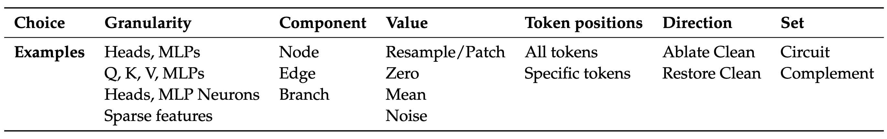
How do these variations change the results of experiments that measure circuit faithfulness?
TL;DR
- We study three different circuits from the literature and find that measurements of their faithfulness are highly dependent on details of the experimental methodology. The IOI and Docstring circuits in particular are much less faithful than reported when tested with a more precise methodology.
- The correct circuit for a set of prompts is undefined. The type of ablation you use to isolate the circuit determines the task that you are asking the circuit to perform - and therefore also the optimal circuit.
- This is especially important because previous work in automatic circuit discovery has tested algorithms by their ability to recover these "ground-truth" circuits from the literature - without considering these potential pitfalls and nuances.
Read the full paper here.
Case Studies
We look at three circuits from the mech interp literature to demonstrate that faithfulness metrics are highly sensitive to the details of experimental setup.
Indirect Object Identification Circuit
The IOI circuit is the most well known circuit in a language model. It computes completions to prompts of the form:
"When Mary and John went to the store, John gave a bottle of milk to ____"
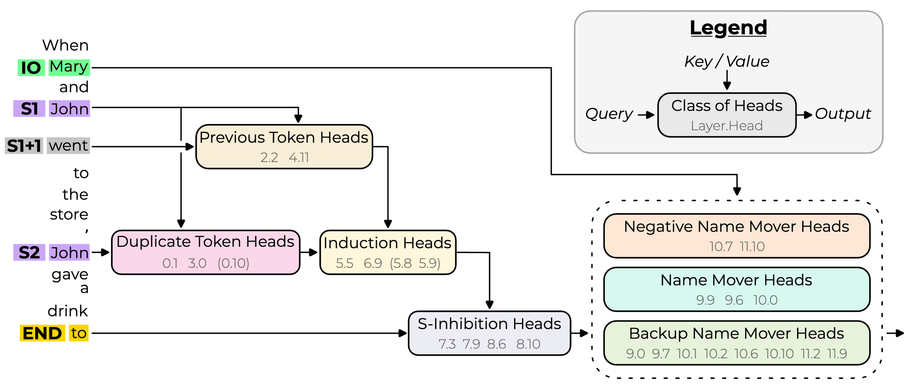
The circuit is specified as a graph of important attention heads (nodes) and the interactions between them (edges) as applied to a specific sequence of tokens. The authors report that the circuit explains 87% of the logit difference between the two name tokens. They find this number by passing some inputs to the model and ablating all activations outside of the circuit. Then they measure how much of the logit difference between the correct and incorrect name logits remains.
However, an important detail is that they arrived at this number by ablating the nodes (heads) outside of the circuit, not by ablating the edges (interactions between heads) outside of the circuit. So they don't ablate, for example, the edges from the previous token heads to the name mover heads, even though these are not part of the circuit (effectively including more edges in the circuit). We calculate the logit difference recovered (defined below) when we ablate the edges outside of the circuit instead.
They ablate the heads by replacing their activations with the mean value calculated over the "ABC distribution", in which the names in the prompts are replaced by random names.In our experiments, we also try resampling the activations from different prompts (taking individual prompt activations instead of averaging).
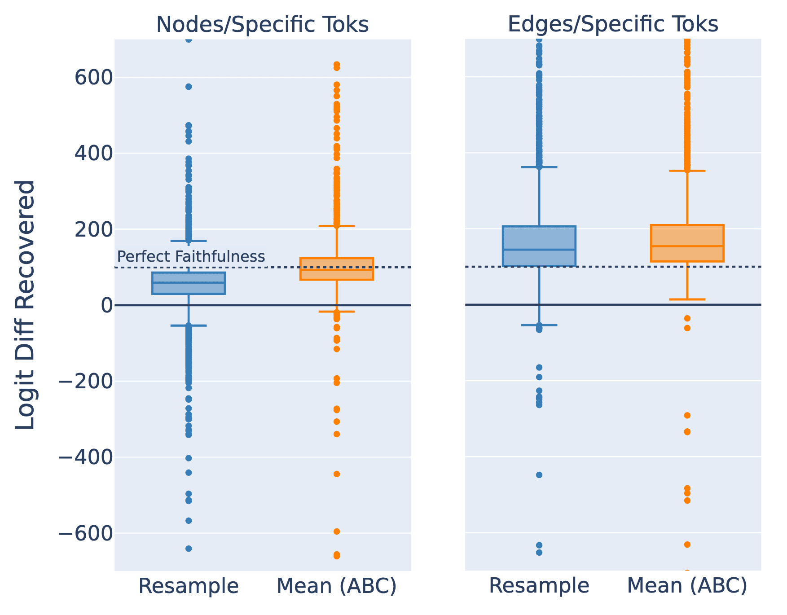
- Nodes/Specific Toks = Ablate nodes not in the circuit (at relevant token positions).
- Edges/Specific Toks = Ablate edges not in the circuit (at relevant token positions).
The first thing that jumps out from the box plots above is the very large range of results from different prompts. The charts here are cut off and some points are over 10,000%. This means that although the average logit difference recovered is reasonable, few prompts actually have a logit difference recovered close to 100%.
And we see that ablating the edges instead of the nodes gives a much higher average logit difference recovered - close to 150% (which means that the isolated circuit has a greater logit difference between the correct and incorrect names than the un-ablated model). So the edge-based circuit they specified it is much less faithful than the node-based circuit they tested.
The authors calculate the 87% result as the ratio of the expected difference (over a set of prompts) in the ablated output and the expected difference in the normal output [left side of figure below]:
$$\text{Logit Difference Recovered} = \frac{\mathbb{E}[F(x)_{\text{correct}} - F(x)_{\text{incorrect}}]}{\mathbb{E}[M(x)_{\text{correct}} - M(x)_{\text{incorrect}}]} \times 100.$$
Where $M(x)_\text{correct}$ is the output logit for the correct name token when running the un‑ablated model on input $x$ and $F(x)_{\text{correct}}$ is the output logit for the correct name token when running the model on input $x$ and ablating all activations outside of circuit $C$ with values $A$ (similarly for incorrect, with the incorrect answer being the wrong person's name). But the more natural metric would be the expected ratio of the difference in the ablated output and the difference in the normal output [right side of figure below].
$$\mathbb{E}\left[\frac{F(x)_{\text{correct}} - F(x)_{\text{incorrect}}}{M(x)_{\text{correct}} - M(x)_{\text{incorrect}}} \times 100 \right]$$
Which gives a substantially different result.
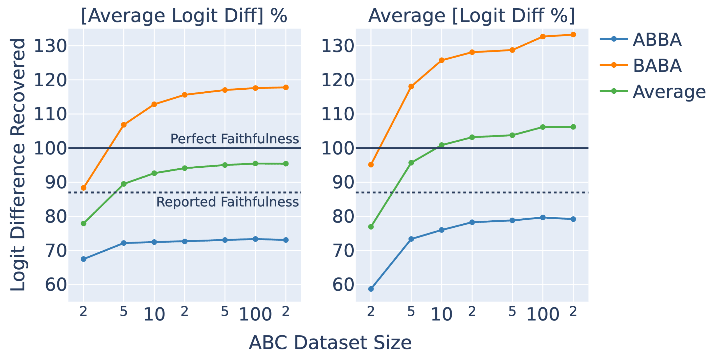
The authors combine two variations of the prompt format in their dataset that have different orderings of the names (ABBA or BABA). We separate these groups and find that BABA prompts score systemically higher.
Finally, we find that the faithfulness scores increase as we increase the number of samples used to calculate the mean ablations (ABC Dataset Size in the figure above). We need a surprisingly small dataset size (about 4 prompts) to reproduce the 87% figure reported.[5] Our hypothesis is that the noisy means calculated over a small number of points push the model towards particular wrong answers, whereas the less noisy means merely destroy all the information present (as intended).
Docstring Circuit
The docstring circuit is a circuit in a tiny 2-layer, attention-only transformer that computes completions to prompts of the form:
def item(self, string, server, node, test, file, first):
"""profit support street
:param node: hat connection
:param test: tip president
:param
Where the correct next token is file. The circuit looks like this:
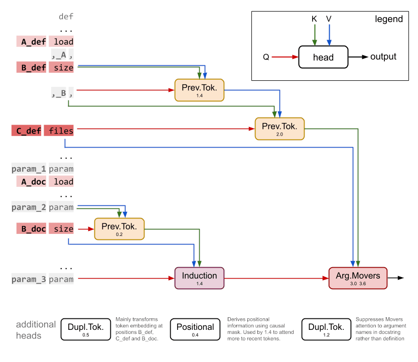
The authors measure the faithfulness as the percentage of prompts where the highest logit is the correct answer and get a result of 58% (compared to the full model at 56%). As with the IOI circuit, they arrived at this number by resampling the activations of attention heads outside of the circuit, not by ablating the edges outside of the circuit. When we instead ablate the edges, we find a very different result.
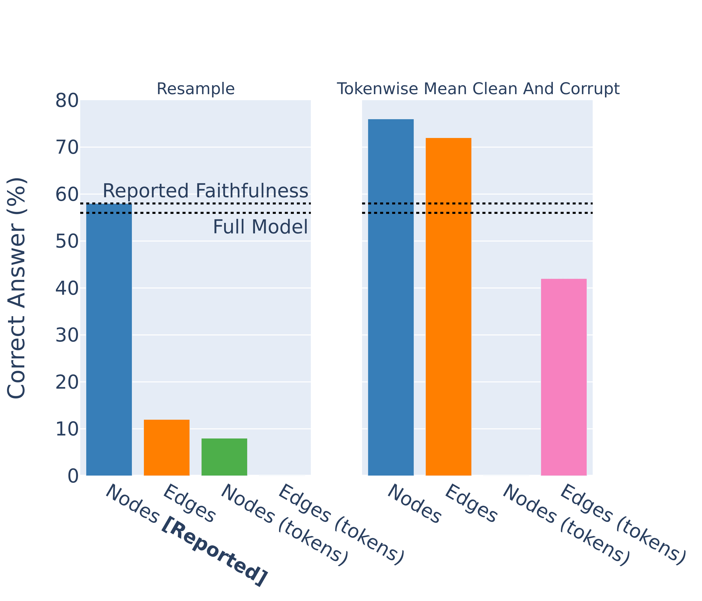
- Nodes = Ablate nodes outside of the circuit.
- Nodes (tokens) = Ablate nodes outside the circuit (at relevant token positions).
- Edges = Ablate edges outside of the circuit.
- Edges (tokens) = Ablate edges outside the circuit (at relevant token positions).
The authors also don't distinguish between tokens in their ablations, even though the circuit specifies particular token positions for each edge. When we make this distinction the faithfulness metric drops dramatically. Finally, we try the experiments using mean ablations, instead of resampling activations from different prompts. This dramatically increases the faithfulness scores of the edge-level circuit.
Finally we note that, as with the IOI circuit, there is lots of variation between individual inputs for all ablation methodologies.
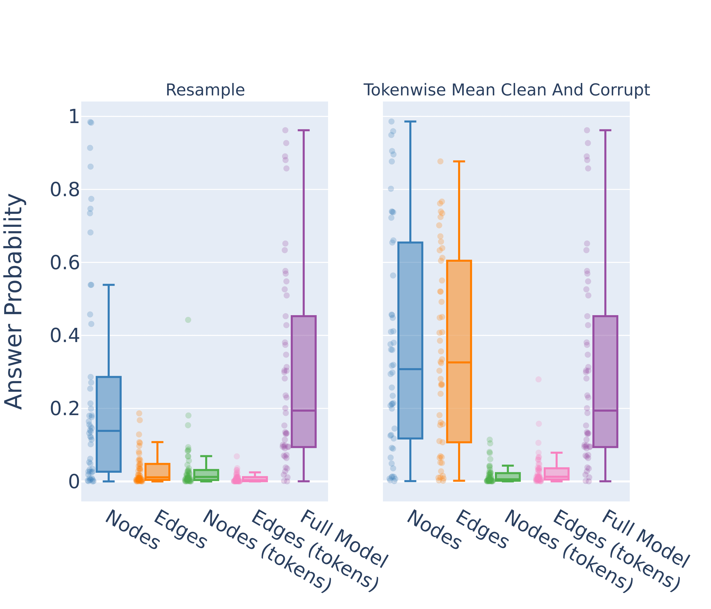
2. Edges = Ablate edges outside of the circuit
3. Nodes (tokens) = Ablate nodes outside the circuit (at relevant token positions).
4. Edges (tokens) = Ablate edges outside the circuit (at relevant token positions).
Sports Players Circuit
Nanda et al. find a circuit in Pythia 2.8B that can correctly distinguish the sport played by famous sports players. Their metric is the percentage of prompts for which the correct sport token is the highest logit out of the three possible sports.
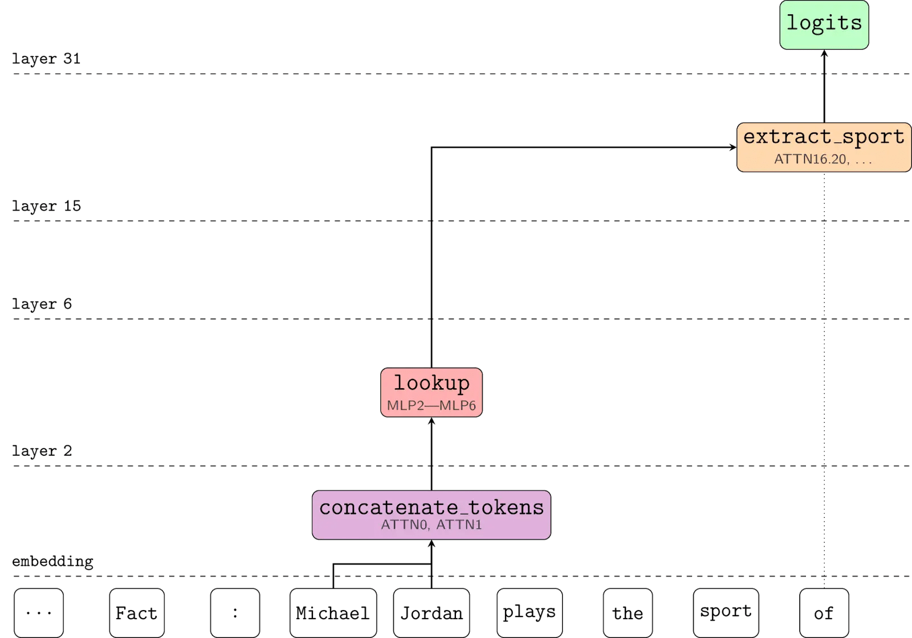
They test their circuit by mean ablating the edges outside of the circuit. When we use resample ablations instead, the metric goes to zero. This case is a little different because their aim wasn't to find the full circuit but to identify the place in the model where factual recall occurs, so this result doesn't negate their hypothesis. But it does again highlight the sensitivity of faithfulness scores to these nuanced choices in methodology
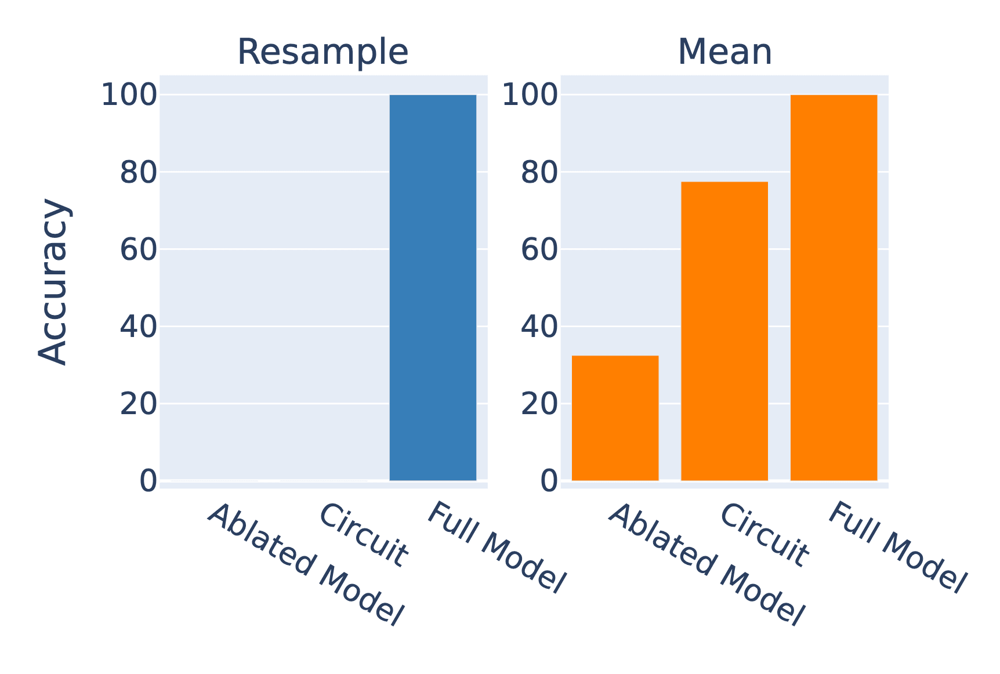
- Ablated Model = Ablate all activations
- Circuit = Ablate all activation except those in the circuit
- Full model = No ablations
Methodology Should Match the Circuit
We conclude that if a circuit is specified as a set of edges, it should be tested using edge ablations. And if it is specified at a chosen set of token positions it should be tested with these.
But in other aspects there often isn't a clearly correct methodology. For example, it's unclear whether mean ablations are better than resample ablations for a particular experiment - even though this choice can dramatically change the outcome.
Optimal Circuits are Defined by Ablation Methodology
We argue that because faithfulness metrics are sensitive to experimental methodology, it actually does not make sense to ask what the optimal circuit for a set of prompts is. The task is defined in part by the ablation methodology - you have to specify how you will isolate the circuit.
Do you want your IOI circuit to include the mechanism that decides it needs to output a name? Then use zero ablations. Or do you want to find the circuit that, given the context of outputting a name, completes the IOI task? Then use mean ablations. The ablation determines the task.
As a concrete example where this insight was overlooked, we review Conmy et al.'s experiments using automatic circuit discovery on two Tracr models. These are tiny transformers where the weights have been compiled to exactly implement some program - so we fully understand all of the internal components.
The authors choose "ground-truth" circuits as the edges required to recover full performance with zero ablations. But their circuit discovery algorithms use resample ablations to discover the circuit. Some of the information required to perform the task occurs in all of the inputs, so resampling activations doesn't disrupt the flow of this information. Whereas zero ablating does destroy the flow, requiring more edges to be included in the circuit.
Furthermore, two of their algorithms, SP and HISP, ablate nodes to discover the circuits, but they specify the circuits in terms of edges. They report fairly weak results for all three algorithms. But when we redefine the "ground-truth" circuits as the edges required to recover performance with resample ablations and adjust SP and HISP to use edge ablations to discover the circuit, we find that all three algorithms perfectly recover the "ground-truth".
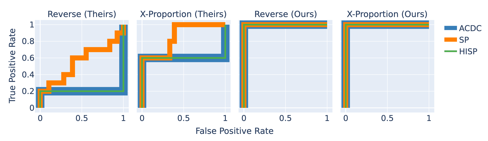
This example demonstrates the point that the correct circuit for a prompt alone is undefined. The method by which the circuit is isolated is crucial in determining the optimal set of components. When the ablation methodology for the circuit discovery algorithm and the "ground-truth" circuit are mismatched, the algorithm underperforms.
This is particularly important because circuit discovery algorithms are often tested by their ability to recover "ground-truth" circuits from the literature (eg, [1], [2], [3]) - without considering whether the circuit matches the algorithm.
AutoCircuit
We release a Python library called AutoCircuit with the paper that implements edge ablation and circuit discovery highly efficiently. A previous post explains the algorithm in detail, but the short version is that it is much faster than previous implementations.
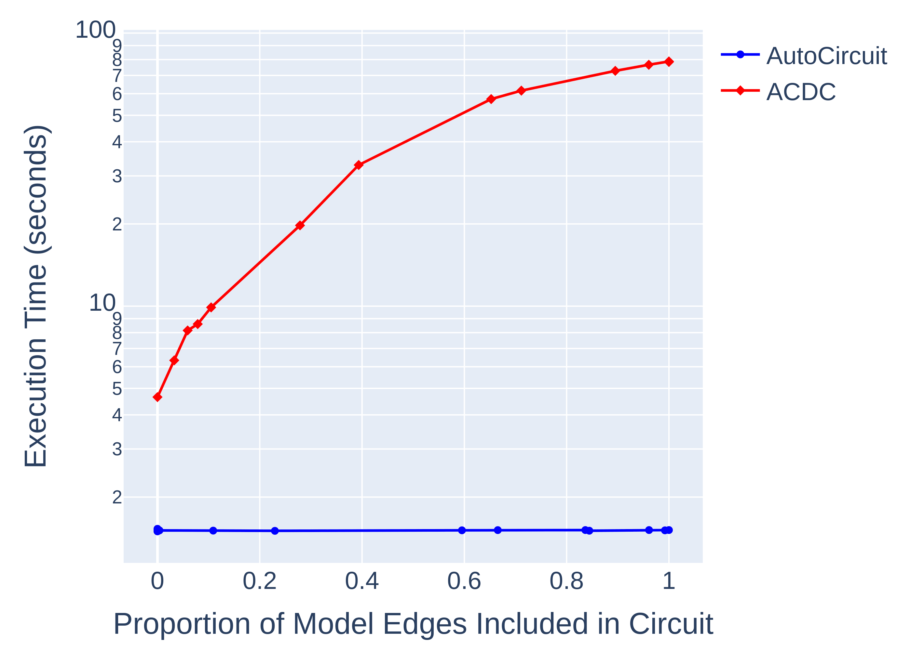
Thanks to Arthur Conmy for his generous assistance in understanding and reproducing his work on Automatic Circuit Discovery and his insightful comments. Thanks to Adam Gleave, Lawrence Chan, Clement Neo, Alex Cloud, David Bau, Steven Bills, Sam Marks, Adrià Garriga-Alonso, Stefan Heimersheim, Nix Goldowsky-Dill and our anonymous reviewers at COLM 2024 for their invaluable feedback and suggestions. Thanks to Bryce Woodworth for his help and encouragement.